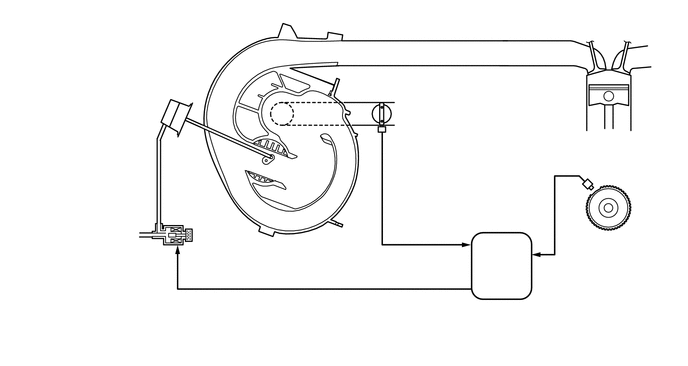

1.135,0.906 1.385,0.906
1.385,0.906 1.74,1.104
true
1.5,3.292 1.292,3.292
1.292,3.292 1.708,2.521
true
2.292,2.635 2.146,2.635
2.146,2.635 2.677,1.896
true
3.979,1.344 4.365,1.625
4.365,1.625 4.552,1.625
true
5.875,3.073 5.875,2.115
5.875,2.115 6.115,1.927
true
0.531,0.813 1.76,1.01
1.229,0.198
10
false
执行器
0.438,2.365 1.375,2.771
0.938,0.406
10
false
自真空稳压罐
1.573,3.198 4.563,3.458
2.99,0.26
10
false
占空比控制型真空开关阀
4.635,1.542 6.406,1.792
1.771,0.25
10
false
节气门位置传感器
2.354,2.552 4.135,2.813
1.781,0.26
10
false
进气控制阀
5.458,3.125 6.448,3.625
0.99,0.5
10
false
曲轴位置传感器
5.052,2.677 5.51,2.875
0.458,0.198
10
false
ECM